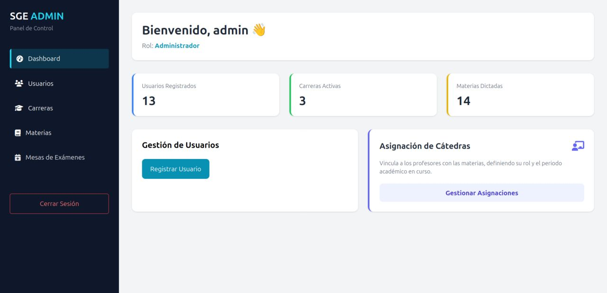

Analista en Computación & Desarrollador
Me apasiona transformar problemas complejos en soluciones eficientes. Mi fuerte es estructurar la lógica y la arquitectura en el backend, asegurando un código limpio mediante patrones de diseño. Como también manejo la maquetación en el frontend, logro entender y construir sistemas completos de principio a fin. Disfruto mucho trabajar en equipo y busco aportar valor real desde el primer día en proyectos que me desafíen a seguir creciendo.
Sobre Mí
Soy estudiante de último año de la carrera de Analista en Computación, Cuento con experiencia práctica en el desarrollo de software, enfocándome en la creación de sistemas completos de inicio a fin. Me especializo en el desarrollo Backend utilizando Java (junto con Spark) y en la gestión de bases de datos relacionales mediante MySQL y SQL (implementando herramientas como ActiveJDBC). En estos proyectos participo en el modelado de datos y en la lógica de negocio, aplicando diversos patrones de diseño.
Además de mi enfoque principal, tengo conocimientos sólidos en Frontend (HTML, CSS y diseño responsive), lo que me permite tener una visión integral del ciclo de vida de la aplicación y lograr integraciones fluidas. También me encuentro incorporando conceptos de análisis de datos con Python para seguir potenciando mi capacidad analítica y lógica.
Me entusiasma crear soluciones que generen impacto, seguir aprendiendo y adaptarme a nuevas tecnologías trabajando bajo dinámicas y metodologías ágiles. Disfruto escribir código limpio, organizado y escalable, priorizando la calidad del software y el trabajo colaborativo mediante el control de versiones con Git y GitHub.
Mis Habilidades
Backend
- Java
- Python
- SQL & Bases de Datos
- ActiveJDBC (ORM)
- Patrones de Diseño y Arquitectura
Frontend
- HTML5 Semántico
- CSS3 (Flexbox & Grid)
- JavaScript
- Diseño Responsivo & BEM
Herramientas
- Git & Git Bash
- GitHub
- Visual Studio Code
Habilidades Blandas
- Trabajo colaborativo en equipo
- Resolución de problemas lógicos
- Comunicación efectiva
- Proactividad
- Adaptabilidad a nuevas tecnologías
- Pensamiento analítico y crítico
Mis Proyectos

Sistema de Gestión Universitaria
Plataforma para la gestión académica y registro de profesores. Desarrollada con arquitectura MVC y conexión eficiente a bases de datos relacionales.
¡Hablemos!
Actualmente estoy buscando mi primera experiencia profesional en IT. Si te interesa mi perfil o quieres charlar sobre tecnología, ¡no dudes en escribirme!